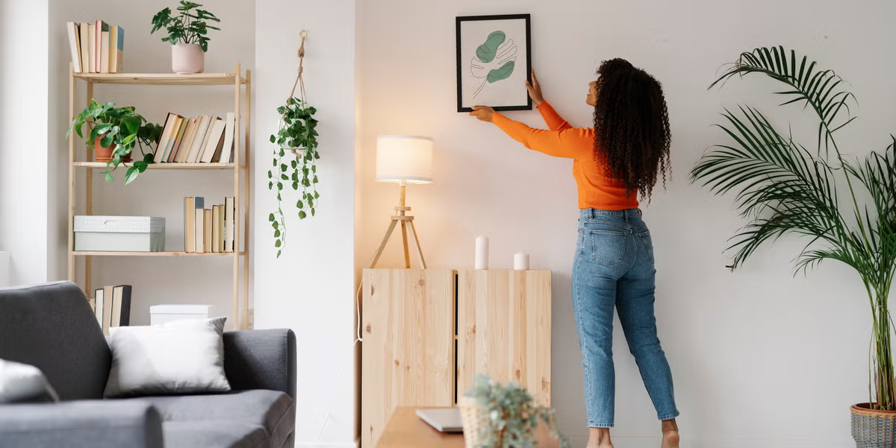
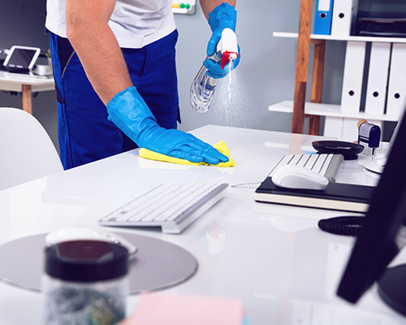
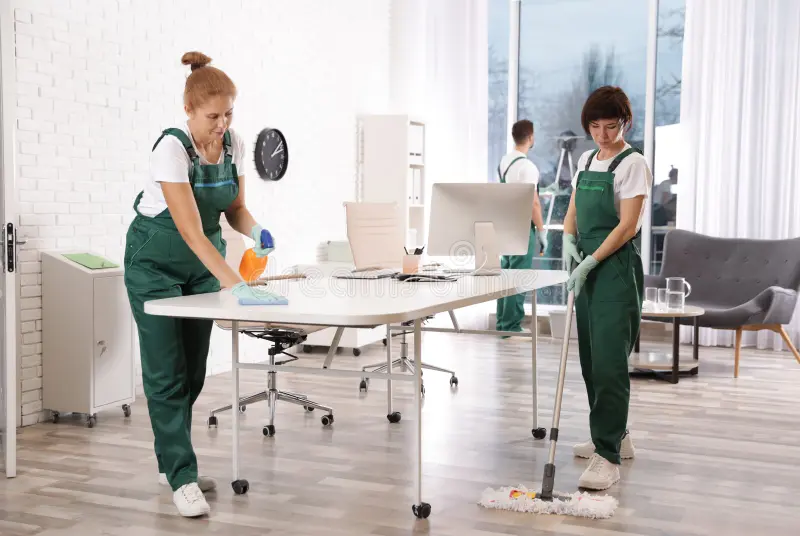

Våra tjänster

Hemstädning
Från 299 kr – med RUT-avdrag bara 149 kr!

Kontorsstädning
Anpassade lösningar – offert vid förfrågan

Fönsterputs
Från 199 kr – med RUT-avdrag bara 99 kr!

RUT-avdrag – betala halva priset
Som privatkund får du 50 % rabatt direkt på fakturan. Vi sköter allt med Skatteverket!
Frågor & Svar
✅ Vad är RUT-avdrag?
RUT-avdraget ger dig 50 % rabatt på arbetskostnaden för t.ex. hemstädning och fönsterputs.
📅 Kan jag välja tid själv?
Ja! Du väljer tid och datum själv i vårt bokningsformulär.
Kontakt
📞 070-123 45 67
📧 kontakt@dinstadpartner.se
Borås, Sverige